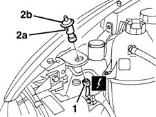

5580E28 bonnet lid open alert switch - r+r following electrical wiring check
- Path
- Procedures > 55 ELECTRICAL EQUIPMENT > 5580 SPECIAL ACCESSORIES > 5580E ANTI-THEFT DEVICE > 5580E28 bonnet lid open alert switch - r+r following electrical wiring check
- Kind
- repair procedure (removal / refitting; the operation number is the code)
- Applies to
- all engines; all production periods
- Interactive page
- https://sloeber94.github.io/elrnDB-fMltpl/en/#/2891988
Applies to: all engines; all production periods
 Removing
Removing
 Refitting
Refitting1. Open the bonnet lid and disconnect the electrical connection.
 | Name | Connector |
|---|---|---|
1 | Bonnet opening switch |
2. Release the retainers (2a) and remove the switch (2b).

Applies to: all engines; all production periods
Refitting
RemovingCheck that the switch is not damaged and, if necessary, conduct an electrical test on it.
Position the switch and engage the retainers.
Connect the electrical connection.
Connect the battery.
Check the operation of the system using the Examiner or the other diagnostic equipment.